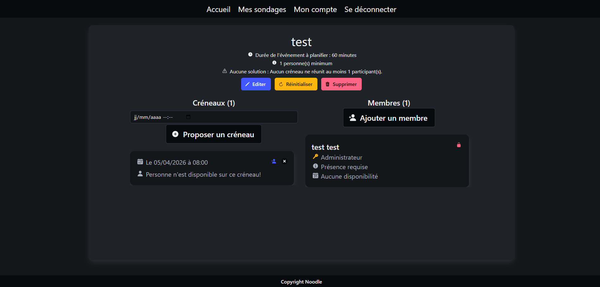

Noodle
Plateforme open source de productivité étudiante permettant de gérer modules, notes, tâches, flashcards et emploi du temps en un seul espace unifié.

Liens avec les Compétences du BUT
Ce projet m'a permis de mobiliser plusieurs compétences fondamentales du BUT Informatique, dans le cadre du parcours RACDV, à travers la réalisation d'une application web full-stack orientée productivité étudiante.
- Développement Full-Stack : Mise en place du front-end React et du back-end Node.js/Express via le template Noodle.
- Composants réutilisables : Architecture en composants React pour les modules, notes et tâches.
- Responsive : Interface adaptée desktop, tablette et mobile.
- Optimisation des rendus : Utilisation de React hooks pour limiter les re-rendus inutiles.
- Requêtes API efficaces : Chargement paresseux et mise en cache des données côté client.
- Profiling : Identification et résolution des goulots d'étranglement de performance.
- Modélisation : Conception du schéma de données (modules, notes, tâches, flashcards, emploi du temps).
- Requêtes optimisées : Indexation des collections fréquemment interrogées.
- Intégrité : Gestion des relations entre entités et contrôle des données en entrée.
- Méthode Agile : Organisation en sprints avec rétrospectives régulières.
- User stories : Définition des besoins fonctionnels et critères d'acceptation.
- CI/CD : Pipeline d'intégration continue via GitLab CI.
- Gestion Git : Workflow par branches, merge requests et code reviews.
- Communication : Documentation technique et réunions de synchronisation régulières.
- Répartition : Spécialisation frontend / backend avec coordination efficace en équipe de 5.
Fonctionnalités Principales
Gestion des modules
Organisation des matières et des cours par modules, avec suivi de l'avancement et des ressources associées.
Prise de notes
Éditeur de notes riche lié aux modules, avec organisation hiérarchique et recherche plein texte.
Gestion des tâches
Tableau de suivi des tâches et devoirs, avec priorités, dates d'échéance et statuts.
Flashcards
Système de révision par cartes générées depuis les notes, avec répétition espacée.
Emploi du temps
Visualisation hebdomadaire et mensuelle des cours, avec import/export.
Suivi des notes
Calculateur de moyenne et tableau de bord des résultats académiques par module.
Défis Techniques Relevés
Prise en main du code de base
Comprendre et adapter un template open source existant sans le casser.
- Analyse de l'architecture du projet Noodle existant.
- Identification des points d'extension et de personnalisation.
- Documentation des choix techniques initiaux.
Gestion des relations de données
Modéliser proprement les liens entre modules, notes, tâches et flashcards.
- Conception du schéma entité-relation.
- Mise en œuvre des jointures et des requêtes complexes.
- Gestion de la cohérence des données lors des suppressions.
Travail collaboratif sur Git
Coordonner les contributions de 5 développeurs sans conflits majeurs.
- Mise en place d'un workflow de branches Git structuré.
- Procédure de code review systématique via merge requests.
- Résolution de conflits et rebases réguliers.
Stack Technologique
Frontend
- React Bibliothèque UI — composants et hooks
- TypeScript Typage statique pour plus de robustesse
- Tailwind CSS Styles utilitaires rapides et cohérents
Backend
- Node.js / Express Serveur API REST
- Base de données Stockage persistant des données étudiantes
- Authentification Gestion des sessions et des droits utilisateurs
Outils & DevOps
- GitLab Versioning, merge requests, CI/CD
- GitLab CI Pipeline d'intégration continue
- Méthode Agile Sprints, user stories, rétrospectives
Apprentissages Clés
Reprise de code existant
Apprendre à lire, comprendre et étendre un projet open source sans tout réécrire — une compétence professionnelle essentielle.
Architecture React avancée
Maîtrise des patterns React modernes (hooks, context, lazy loading) pour construire une application maintenable et performante.
Conception centrée utilisateur
Réflexion sur les vrais besoins des étudiants pour concevoir une plateforme intuitive et utile au quotidien.
Collaboration en équipe
Expérience concrète de travail en équipe de 5 avec une méthodologie Agile et des outils professionnels (Git, GitLab CI).